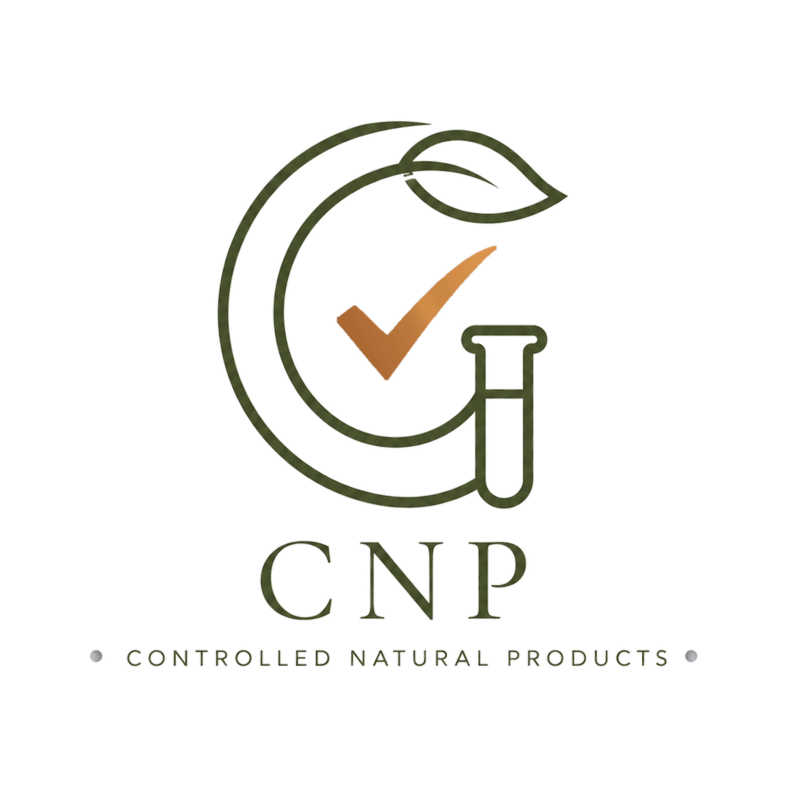
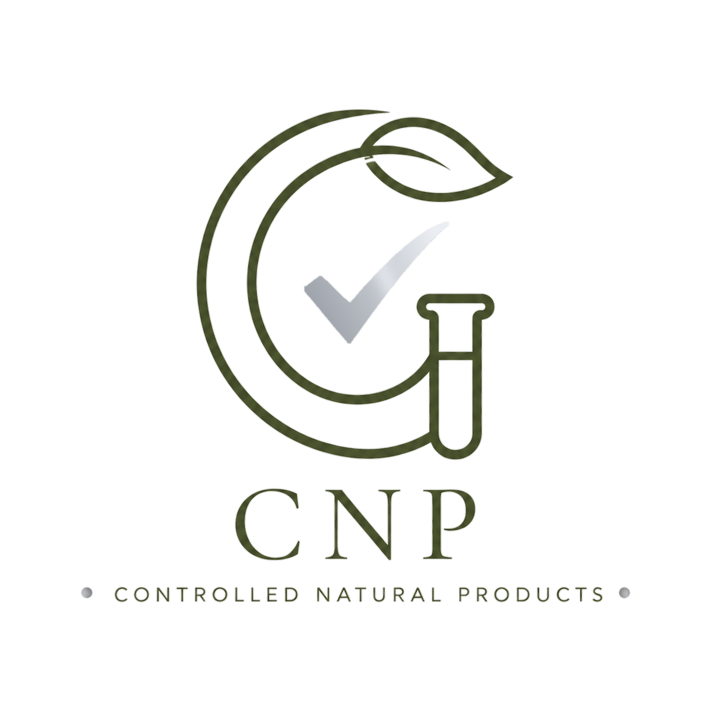
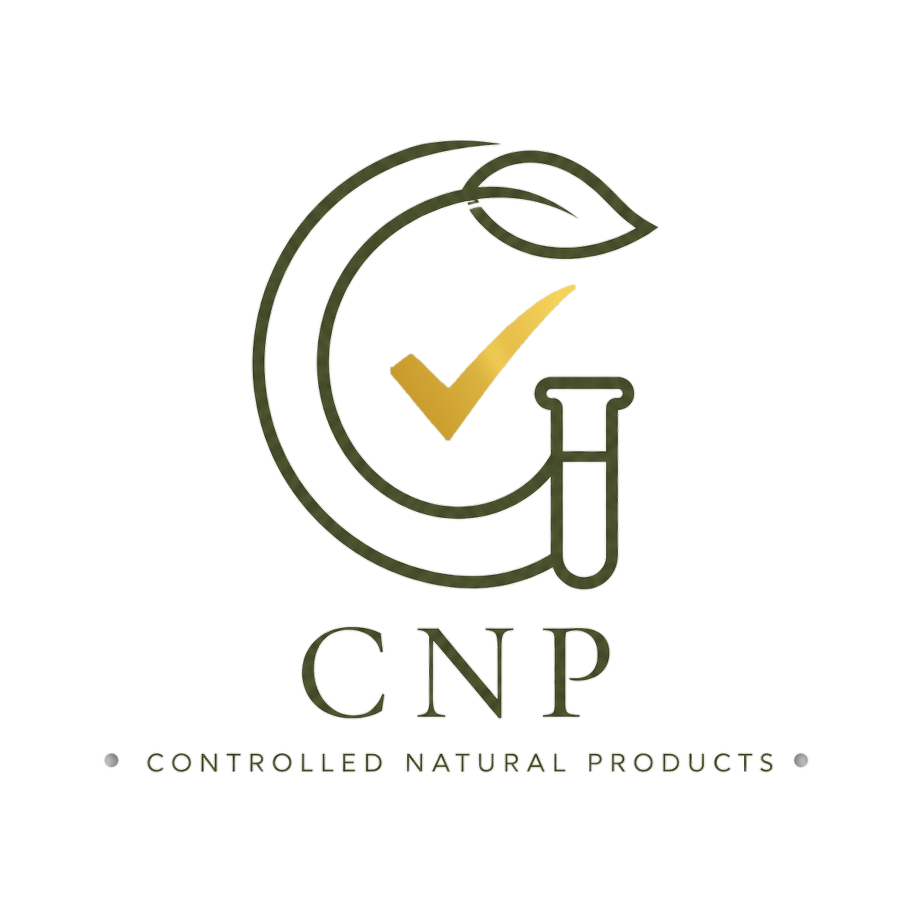

Bronze level mark
Bronze · Evidence review
CNP Verified
Independent review of the product dossier, claims and existing supporting evidence.
Estimated time2–3 weeks
Best forBrands with a mature dossier and suitable existing evidence
Bronze, Silver and Gold describe the scientific pathway completed by the product—not a ranking of the cosmetic itself.
Bronze and Silver require no sample. Gold samples are requested only after the experimental protocol is confirmed.

Bronze
Silver
GoldThe product packaging stays consistent. Only the CNP tick changes colour to communicate the achieved validation depth.
Independent review of the product dossier, claims and existing supporting evidence.
Every level includes the shared CNP documentation and claim review.
| Included activity | Bronze | Silver | Gold |
|---|---|---|---|
| Documentation and claim review | ✓ | ✓ | ✓ |
| In-silico validation | — | ✓ | Optional |
| Experimental testing | — | — | ✓ |
| Physical sample at initial submission | No | No | No |
| Sample requested later | No | No | Only if required by the agreed protocol |
| Indicative duration | 2–3 weeks | 4–6 weeks | 8–12 weeks |
CNP will review the product, claims and evidence before confirming the most appropriate validation depth.
Bronze and Silver require documents and data only—no physical product sample. Gold samples are requested separately only after CNP agrees the experimental protocol with the brand.